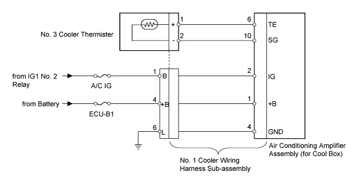
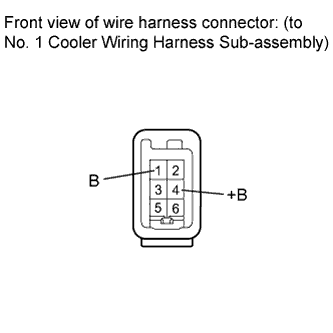
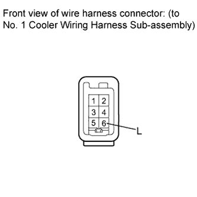
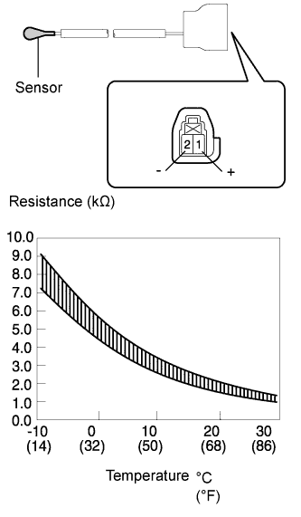

AIR CONDITIONING SYSTEM > Cooling Box Sensor Circuit |

| 1.INSPECT FUSE (A/C IG, ECU-B1) |
Remove the A/C IG fuse from the cowl side junction block LH.
Remove the ECU-B1 fuse from the engine room relay block.
Measure the resistance according to the value(s) in the table below.
| Tester Connection | Condition | Specified Condition |
| A/C IG fuse | Always | Below 1 Ω |
| ECU-B1 fuse | Always | Below 1 Ω |
|
| ||||
| OK | |
| 2.CHECK HARNESS AND CONNECTOR (NO. 1 COOLER WIRING HARNESS - BATTERY) |
 |
Disconnect the No. 1 cooler wiring harness sub-assembly connector.
Measure the voltage according to the value(s) in the table below.
| Tester Connection | Condition | Specified Condition |
| 4 (+B) - Body ground | Always | 11 to 14 V |
| 1 (B) - Body ground | Engine switch off | Below 1 V |
| Engine switch on (IG) | 11 to 14 V |
|
| ||||
| OK | |
| 3.CHECK HARNESS AND CONNECTOR (NO. 1 COOLER WIRING HARNESS - BODY GROUND) |
 |
Disconnect the No. 1 cooler wiring harness sub-assembly connector.
Measure the resistance according to the value(s) in the table below.
| Tester Connection | Condition | Specified Condition |
| 6 (L) - Body ground | Always | Below 1 Ω |
|
| ||||
| OK | |
| 4.CHECK NO. 1 COOLER WIRING HARNESS SUB-ASSEMBLY (OPERATION) |
Replace the No. 1 cooler wiring harness sub-assembly with a normal one and check that the condition returns to normal.
|
| ||||
| OK | ||
| ||
| 5.CHECK NO. 3 COOLER THERMISTOR |
 |
Remove the No. 3 cooler thermistor (Click here).
Measure the resistance according to the value(s) in the table below.
| Tester Connection | Condition | Specified Condition |
| 1 (+) - 2 (-) | -10°C (14°F) | 7.30 to 9.10 kΩ |
| -5°C (23°F) | 5.65 to 6.95 kΩ | |
| 0°C (32°F) | 4.40 to 5.35 kΩ | |
| 5°C (41°F) | 3.40 to 4.15 kΩ | |
| 10°C (50°F) | 2.70 to 3.25 kΩ | |
| 15°C (59°F) | 2.14 to 2.58 kΩ | |
| 20°C (68°F) | 1.71 to 2.05 kΩ | |
| 25°C (77°F) | 1.38 to 1.64 kΩ | |
| 30°C (86°F) | 1.11 to 1.32 kΩ |
|
| ||||
| OK | ||
| ||